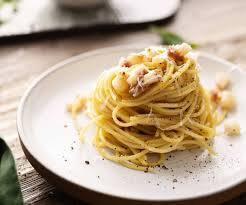

Carbonara

Description
Discover how to make traditional spaghetti carbonara.
This classic Italian pasta dish combines a silky cheese sauce with crisp pancetta and black pepper.
Ingredients
- 100g pancetta
- 50g pecorino cheese
- 50g parmesan
- 3 large eggs
- 350g spaghetti
Steps
- Put a large saucepan of water on to boil.
- Finely chop the 100g pancetta, having first removed any rind. Finely grate 50g pecorino cheese and 50g parmesan and mix them together.
- Beat the 3 large eggs in a medium bowl and season with a little freshly grated black pepper. Set everything aside.
Back to Home